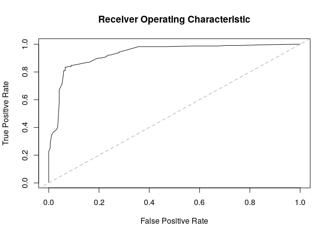

Integrative Methods of Analysis for Genetic Epidemiology
This R package taps into statistical theory mostly developed in the social networks realm. Using Exponential-Family Random Graph Models (ERGMs), geese provides an statistical framework for building Gene Functional Evolution Models using Sufficiency. For example, users can directly hypothesize whether Neofunctionalization or Subfunctionalization events were taking place in a phylogeny, without having to estimate the full transition Markov Matrix that is usually used.
GEESE is computationally efficient, with C++ under-the-hood, allowing the analyses of either single trees (a GEESE) or multiple trees simulatenously (pooled model), in a Flock.
This is work in progress and based on the theoretical work developed duing George G. Vega Yon’s doctoral thesis.
Installation
The development version from GitHub with:
# install.packages("devtools")
devtools::install_github("USCbiostats/geese")Examples
Simulating annotations (two different sets)
library(geese)
# Preparing data
n <- 100L
annotations <- replicate(n * 2 - 1, c(9, 9), simplify = FALSE)
# Random tree
set.seed(31)
tree <- aphylo::sim_tree(n)$edge - 1L
duplication <- rep(TRUE, n * 2 - 1)
# Reading the data in
amodel <- new_geese(
annotations = annotations,
geneid = c(tree[, 2], n),
parent = c(tree[, 1], -1),
duplication = duplication
)
# Preparing the model
term_gains(amodel, 0:1)
term_loss(amodel, 0:1)
term_maxfuns(amodel, 1, 1)
init_model(amodel)
#> Initializing nodes in Geese (this could take a while)...
#> ||||||||||||||||||||||||||||||||||||||||||||||||||||||||||||||||||||||||| done.
# Testing
params <- c(
# Gains
2, 1.5,
# Loss
-2, -1.5,
# Max funs
2,
# Root probabilities
-10, -10
)
names(params) <- c("gain0", "gain1", "loss0", "loss1", "onefun", "root0", "root1")
likelihood(amodel, params*0) # Equals 1 b/c all missings
#> [1] 1
# Simulating data
fake1 <- sim_geese(p = amodel, par = params, seed = 1110)
fake2 <- sim_geese(p = amodel, par = params)We can now visualize either of the annotations using the aphylo package.
library(aphylo)
#> Loading required package: ape
ap <- aphylo_from_data_frame(
tree = as.phylo(tree),
annotations = data.frame(
id = c(tree[, 2], n),
do.call(rbind, fake1)
)
)
plot(ap)
Model fitting MLE
# Creating the object
# Creating the object
amodel <- new_geese(
annotations = fake1,
geneid = c(tree[, 2], n),
parent = c(tree[, 1],-1),
duplication = duplication
)
# Adding the model terms
term_gains(amodel, 0:1)
term_loss(amodel, 0:1)
term_maxfuns(amodel, 1, 1)
# We need to initialize to do all the accounting
init_model(amodel)
#> Initializing nodes in Geese (this could take a while)...
#> ||||||||||||||||||||||||||||||||||||||||||||||||||||||||||||||||||||||||| done.
print(amodel)
#> GEESE
#> INFO ABOUT PHYLOGENY
#> # of functions : 2
#> # of nodes [int; leaf] : [99; 100]
#> # of ann. [zeros; ones] : [72; 128]
#> # of events [dupl; spec] : [99; 0]
#> Largest polytomy : 2
#>
#> INFO ABOUT THE SUPPORT
#> Num. of Arrays : 396
#> Support size : 4
#> Support size range : [10, 10]
#> Transform. Fun. : no
#> Model terms (5) :
#> - Gains 0 at duplication
#> - Gains 1 at duplication
#> - Loss 0 at duplication
#> - Loss 1 at duplication
#> - Genes with [1, 1] funs at duplication
# Finding MLE
ans_mle <- geese_mle(amodel, hessian = TRUE)
# Prob of each gene gaining a single function
transition_prob(
amodel,
params = c(-1, -1, -2, -2, -.5),
duplication = TRUE, state = c(FALSE, FALSE),
array = matrix(c(1, 0, 0, 1), ncol=2)
)
#> [1] 0.01990333Model fitting MCMC
set.seed(122)
ans_mcmc <- geese_mcmc(
amodel,
nsteps = 20000,
kernel = fmcmc::kernel_ram(warmup = 2000),
prior = function(p) dlogis(p, scale = 2, log = TRUE)
)We can take a look at the results like this:

#>
#> Iterations = 15000:20000
#> Thinning interval = 1
#> Number of chains = 1
#> Sample size per chain = 5001
#>
#> 1. Empirical mean and standard deviation for each variable,
#> plus standard error of the mean:
#>
#> Mean SD Naive SE Time-series SE
#> Gains 0 at duplication 2.5163 1.5272 0.021595 0.17972
#> Gains 1 at duplication 2.0925 1.2076 0.017077 0.13709
#> Loss 0 at duplication -1.7518 0.6079 0.008596 0.05062
#> Loss 1 at duplication -1.4358 0.6546 0.009257 0.04587
#> Genes with [1, 1] funs at duplication 1.8845 0.4698 0.006643 0.03823
#> Root 1 0.2000 4.5845 0.064828 0.84884
#> Root 2 -0.4791 3.3166 0.046900 0.49277
#>
#> 2. Quantiles for each variable:
#>
#> 2.5% 25% 50% 75% 97.5%
#> Gains 0 at duplication 0.3490 1.484 2.22730 3.187 6.9267
#> Gains 1 at duplication 0.3154 1.258 1.89930 2.630 5.2817
#> Loss 0 at duplication -2.9349 -2.191 -1.72650 -1.306 -0.6860
#> Loss 1 at duplication -2.7509 -1.892 -1.44436 -0.984 -0.1482
#> Genes with [1, 1] funs at duplication 1.0690 1.534 1.86367 2.195 2.8358
#> Root 1 -8.7570 -2.336 0.03266 2.579 10.9341
#> Root 2 -6.9796 -2.679 -0.45639 1.848 5.8369
par_estimates <- colMeans(window(ans_mcmc, start = 20000))
ans_pred <- predict_geese(amodel, par_estimates, leave_one_out = TRUE)
ans_pred <- do.call(rbind, ans_pred)
# Preparing annotations
ann_obs <- do.call(rbind, fake1)
# Mean Absolute Error
hist(abs(ans_pred - ann_obs))
# AUC
(ans <- aphylo::prediction_score(
cbind(as.vector(ans_pred)),
cbind(as.vector(ann_obs))
))
#> Prediction score (H0: Observed = Random)
#>
#> N obs. : 398
#> alpha(0, 1) : 0.37, 0.63
#> Observed : 0.55
#> Random : 0.53
#> P(<t) : 0.2869
#> --------------------------------------------------------------------------------
#> Values scaled to range between 0 and 1, 1 being best.
#>
#> Significance levels: *** p < .01, ** p < .05, * p < .10
#> AUC 0.51.
#> MAE 0.45.
plot(ans$auc)
Using a flock
GEESE models can be grouped (pooled) into a flock.
flock <- new_flock()
# Adding first set of annotations
add_geese(
flock,
annotations = fake1,
geneid = c(tree[, 2], n),
parent = c(tree[, 1],-1),
duplication = duplication
)
# Now the second set
add_geese(
flock,
annotations = fake2,
geneid = c(tree[, 2], n),
parent = c(tree[, 1],-1),
duplication = duplication
)
# Persistence to preserve parent state
term_gains(flock, 0:1, duplication = 1)
term_gains(flock, 0:1, duplication = 1)
term_maxfuns(flock, 1, 1, duplication = 1)
# We need to initialize to do all the accountintg
init_model(flock)
#> Initializing nodes in Flock (this could take a while)...
#> ||||||||||||||||||||||||||||||||||||||||||||||||||||||||||||||||||||||||| done.
print(flock)
#> FLOCK (GROUP OF GEESE)
#> INFO ABOUT THE PHYLOGENIES
#> # of phylogenies : 2
#> # of functions : 2
#> # of ann. [zeros; ones] : [145; 255]
#> # of events [dupl; spec] : [198; 0]
#> Largest polytomy : 2
#>
#> INFO ABOUT THE SUPPORT
#> Num. of Arrays : 792
#> Support size : 4
#> Support size range : [3, 10]
#> Transform. Fun. : no
#> Model terms (5) :
#> - Gains 0 at duplication
#> - Gains 1 at duplication
#> - Gains 0 at duplication
#> - Gains 1 at duplication
#> - Genes with [1, 1] funs at duplicationWe can use the same program to fit the MCMC
set.seed(122)
ans_mcmc2 <- geese_mcmc(
flock,
nsteps = 20000,
kernel = fmcmc::kernel_ram(warmup = 2000),
prior = function(p) dlogis(p, scale = 2, log = TRUE)
)
op <- par(
mfrow = c(4, 2), #tcl=.5,
las=1, mar = c(3,3,1,0),
bty = "n", oma = rep(1,4)
)
for (i in 1:ncol(ans_mcmc2)) {
tmpx <- window(ans_mcmc2, start = 10000)[,i,drop=FALSE]
coda::traceplot(
tmpx, smooth = FALSE, ylim = c(-11,11), col = rgb(0, 128, 128, maxColorValue = 255),
main = names(params)[i]
)
abline(h = params[i], lty=3, lwd=4, col = "red")
}
par(op)
summary(window(ans_mcmc2, start = 10000))
#>
#> Iterations = 10000:20000
#> Thinning interval = 1
#> Number of chains = 1
#> Sample size per chain = 10001
#>
#> 1. Empirical mean and standard deviation for each variable,
#> plus standard error of the mean:
#>
#> Mean SD Naive SE Time-series SE
#> Gains 0 at duplication 1.2650 2.2088 0.022087 0.222041
#> Gains 1 at duplication 0.6656 2.5350 0.025348 0.445193
#> Gains 0 at duplication 1.5533 2.3386 0.023385 0.333928
#> Gains 1 at duplication 0.6474 2.5415 0.025414 0.394829
#> Genes with [1, 1] funs at duplication 0.8878 0.1446 0.001446 0.004478
#> Root 1 0.5259 3.5929 0.035927 0.363434
#> Root 2 0.1195 3.6405 0.036403 0.413736
#>
#> 2. Quantiles for each variable:
#>
#> 2.5% 25% 50% 75% 97.5%
#> Gains 0 at duplication -3.3453 -0.16720 1.28576 2.7768 5.455
#> Gains 1 at duplication -4.5441 -1.03143 0.92544 2.4571 5.112
#> Gains 0 at duplication -2.4602 -0.07041 1.44898 2.8152 6.893
#> Gains 1 at duplication -3.9060 -1.09242 0.33373 2.3327 5.772
#> Genes with [1, 1] funs at duplication 0.6098 0.78839 0.89160 0.9865 1.166
#> Root 1 -7.0003 -1.66898 0.41966 2.6846 8.177
#> Root 2 -7.0876 -2.23377 -0.03671 2.3143 7.521Limiting the support
In this example, we use the function rule_limit_changes() to apply a constraint to the support of the model. This takes the first 2 term (0 and 1 since the index is in C++), and restricts the support to states where there are between [0,2] changes, at most.
This should be useful when dealing with multiple functions or pylotomies.
# Creating the object
amodel_limited <- new_geese(
annotations = fake1,
geneid = c(tree[, 2], n),
parent = c(tree[, 1],-1),
duplication = duplication
)
# Adding the model terms
term_gains(amodel_limited, 0:1)
term_loss(amodel_limited, 0:1)
term_maxfuns(amodel_limited, 1, 1)
term_overall_changes(amodel_limited, TRUE)
# At most one gain
rule_limit_changes(amodel_limited, 5, 0, 2)
# We need to initialize to do all the accounting
init_model(amodel_limited)
#> Initializing nodes in Geese (this could take a while)...
#> ||||||||||||||||||||||||||||||||||||||||||||||||||||||||||||||||||||||||| done.
# Is limiting the support any useful?
support_size(amodel_limited)
#> [1] 196Since we added the constraint based on the term term_overall_changes(), we now need to fix the parameter at 0 (i.e. no effect) during the MCMC model:
set.seed(122)
ans_mcmc2 <- geese_mcmc(
amodel_limited,
nsteps = 20000,
kernel = fmcmc::kernel_ram(
warmup = 2000,
fixed = c(FALSE, FALSE, FALSE, FALSE, FALSE, TRUE, FALSE, FALSE)
),
prior = function(p) dlogis(p, scale = 2, log = TRUE)
)
#>
#> Iterations = 15000:20000
#> Thinning interval = 1
#> Number of chains = 1
#> Sample size per chain = 5001
#>
#> 1. Empirical mean and standard deviation for each variable,
#> plus standard error of the mean:
#>
#> Mean SD Naive SE Time-series SE
#> Gains 0 at duplication 1.4575 0.6083 0.008602 0.04453
#> Gains 1 at duplication 1.1337 0.6868 0.009711 0.05444
#> Loss 0 at duplication -1.8499 0.4843 0.006849 0.04207
#> Loss 1 at duplication -1.7043 0.4894 0.006920 0.03454
#> Genes with [1, 1] funs at duplication 1.6845 0.4270 0.006038 0.03512
#> Overall changes at duplication 0.0000 0.0000 0.000000 0.00000
#> Root 1 -0.4058 4.0884 0.057813 0.76638
#> Root 2 0.4454 3.8899 0.055006 0.78296
#>
#> 2. Quantiles for each variable:
#>
#> 2.5% 25% 50% 75% 97.5%
#> Gains 0 at duplication 0.40725 1.0206 1.42499 1.832 2.8323
#> Gains 1 at duplication -0.04293 0.6465 1.09431 1.593 2.6107
#> Loss 0 at duplication -2.81021 -2.1509 -1.82709 -1.512 -0.9524
#> Loss 1 at duplication -2.65462 -1.9963 -1.68462 -1.377 -0.8145
#> Genes with [1, 1] funs at duplication 0.93538 1.3850 1.65966 1.936 2.6215
#> Overall changes at duplication 0.00000 0.0000 0.00000 0.000 0.0000
#> Root 1 -10.37064 -2.6885 -0.09387 2.250 6.7433
#> Root 2 -6.89559 -1.9881 0.26227 2.743 9.1986Code of Conduct
Please note that the aphylo2 project is released with a Contributor Code of Conduct. By contributing to this project, you agree to abide by its terms.